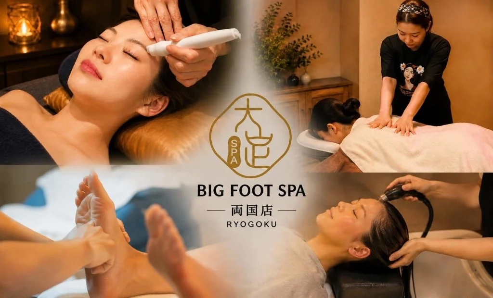
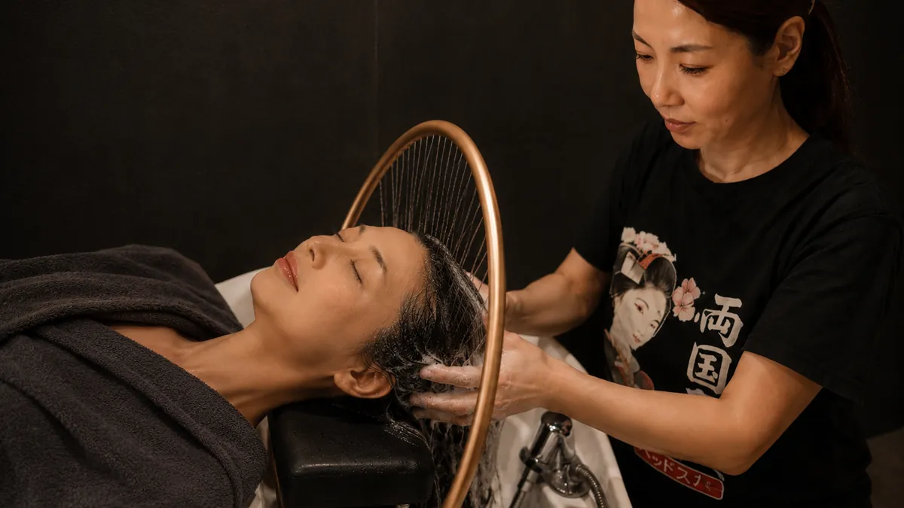
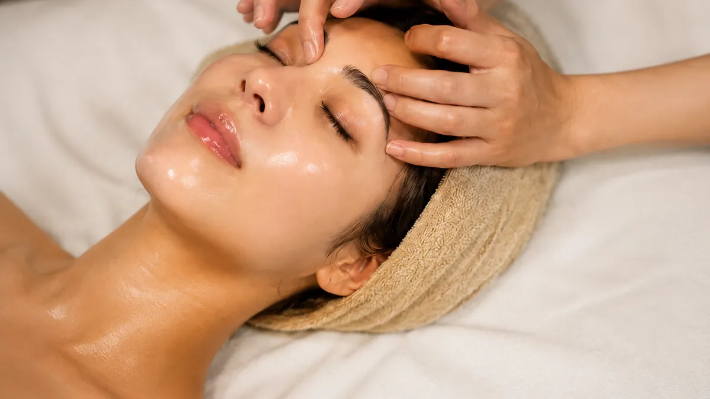
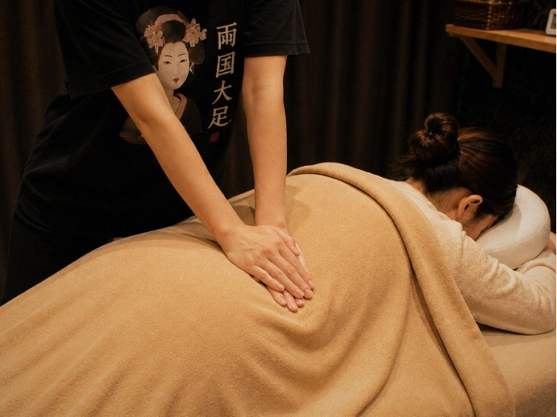
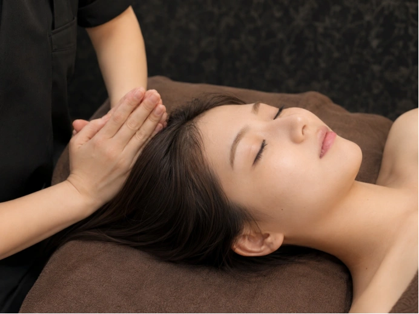
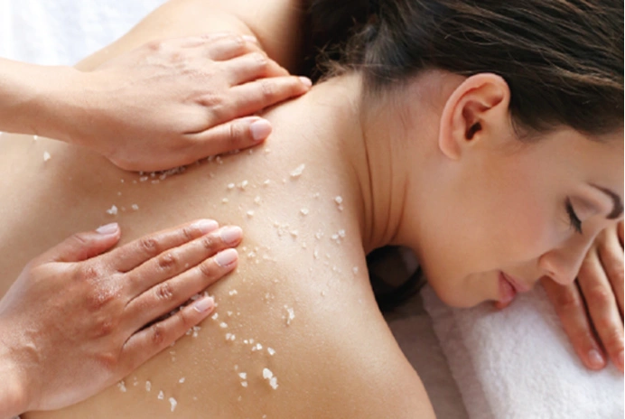
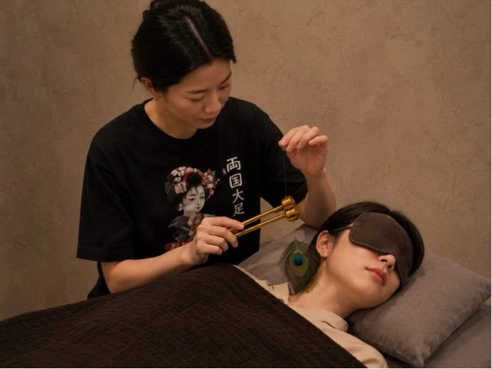

推荐套餐
适合观光/工作之后疲惫的你
両国・錦糸町 BIG FOOT SPA
周一至周五 11:00–23:30／周末及节假日 10:00–23:30
9张足疗椅，独立包间及情侣、团体，一个人来也很方便。
鱼疗 · 精油按摩 · 巴厘式头疗 · 足底按摩 · 推拿按摩
提供中文服务，谷歌，大众点评，猫途鹰 华人客人 评分满分
距JR两国站西口步行30秒，周边多家商务酒店
附近是浅草、东京晴空塔、锦糸町、浅草桥、东京江户博物馆
Scroll
About
关于我们
BIG FOOT SPA 是东京少见的大型专业按摩场所，坐落于两国，融合日式与中式按摩的特色。我们提供全身推拿、足底按摩、精油开背按摩、鱼疗、巴厘式头疗、采耳及面部护理等多种项目，店内设有10间独立单间加2间双人房加9张按摩脚椅，环境安静舒适，兼具私密感与品质感。刚到日本还带着坐飞机的疲惫？东京观光一天下来双腿酸痛、肩颈紧绷？还是回国前想再好好放松一次？无论是一个人来，还是和朋友家人一起，都能在这里舒缓身心、恢复活力。

团体、家庭均可接待，一人来也没问题！
本店拥有足疗椅9台、单人间10间、双人间2间，最多可同时接待23名顾客进店按摩。
临近景点，交通便捷
店铺位于JR两国站西口，步行仅30秒，周边也有多家两国商务酒店。浅草、浅草寺、东京晴空塔、锦糸町、浅草桥、两国相扑国技馆、东京江户博物馆等知名景点均可轻松抵达。
提供多语服务
谷歌，大众点评，猫途鹰评分满分。店铺内工作人员日语、英语、中文均可沟通，价格表支持简体中文和繁体中文
菜单与价格
菜单价格均含税。所有足部按摩疗程均免费附赠足浴，30分钟及以上的足疗还包含小腿部分。精油按摩由女性技师担当，男士顾客也许会因当时的预约情况改由男性技师负责。

足部按摩
从足部开始恢复旅途的疲惫

精油淋巴按摩
全身精油护理·芬芳治愈

巴厘式头疗
清洁头皮，舒缓头部疲劳

面部护理
观光后的脸也能清爽做小脸护理 · 双人、外国客人都可以

整体按摩・指压按摩・推拿按摩
不使用精油

组合套餐
根据您的喜好自由选择

LuLur SPA
巴厘王室传统美肌体验 全身去角质（淋浴费用免费）

采耳护理
采耳
- 更换衣物（可选）：上衣和下装各110日元（一次性纸内裤免费提供）
- 精油和Lulur全身去角质项目会另外加收110日元的一次性床单费用
- 按摩师指名费：550日元；按摩师性别指名费：220日元
- 22：00之后加收项目费用10%作为深夜费用
店内环境
店内休息区域宽敞，提供免费饮品与点心。
设有10间单人房及2间双人房，9张足疗专用脚椅 处处透着高级感与私密感。
店铺信息
交通
从 JR 两国站西口步行约 30 秒即可到达；从都营大江户线两国站步行约 2–3 分钟即可到达。
周边
临近浅草、浅草寺、东京晴空塔、锦糸町、浅草桥、两国相扑国技馆、东京江户博物馆等知名景点
营业时间
周中 11:00–23:30／周末节假日 10:00–23:30（最终接待 23:00）
语言
店内工作人员可用日语、英语、中文沟通。店内提供日文、英文、繁体中文、韩文菜单。